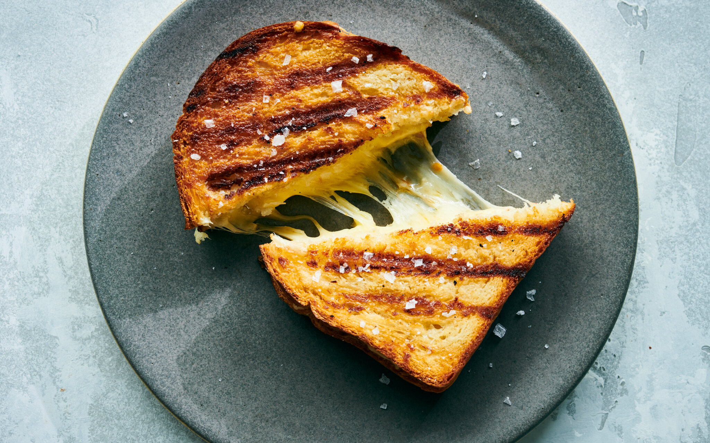

This sandwich recepie has been in my family for many decades and never fails to delight.
To prepare this sandwich recipe, wash the tomato and capsicum. Then, using a clean chopping board, chop them separately and keep them aside until needed again.
Next, take a mixing bowl and add cream cheese in it along with the other filling ingredients. Once done, mix well to combine everything and keep the filling aside until needed again.
Now, lay the bread slices on a clean surface (or tray), pour a spoonful of the prepared filling in the centre of the bread and cover it with another bread slice. Repeat the same step with the remaining bread slices. Cut the sandwiches in half and serve fresh!
